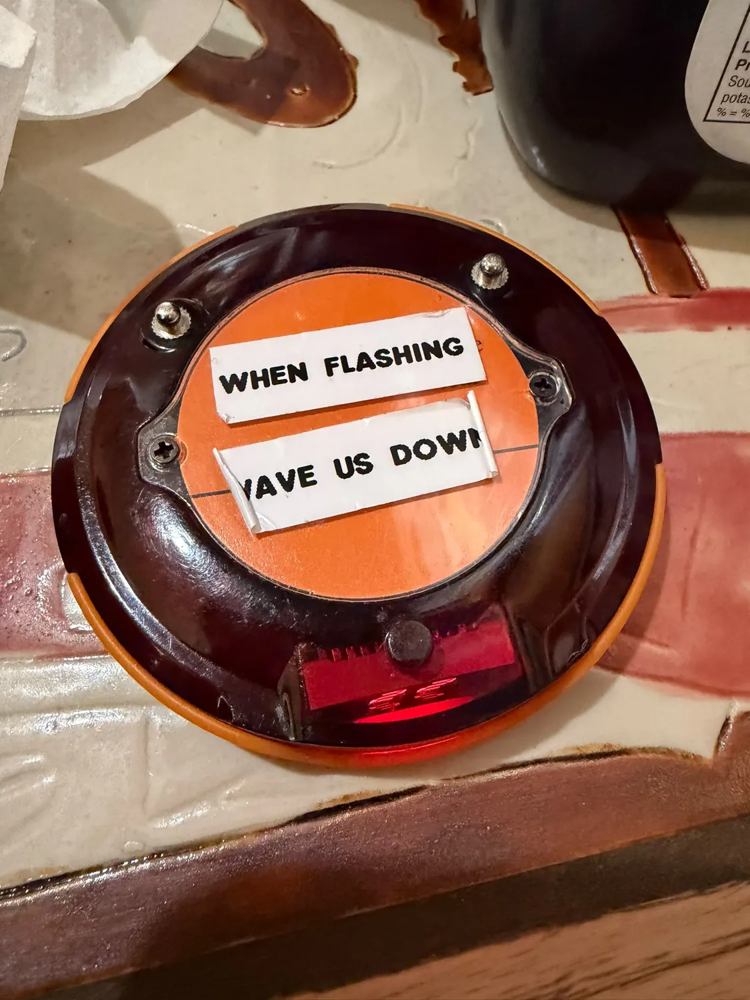

You'll meet people
The regulars have been at the same tables for years. They're friendly, they're curious, and they will find out where you're from before your coffee cools.
Granville's sits right in the middle of downtown, and most of the town passes through it sooner or later. Locals come for coffee and home cooking. Visitors come in to ask the way and leave knowing half the room. We've been open over thirty years, and we still haven't worked out how to make a visit last less than an hour.

Reid Street is where the town crosses paths, and Granville's is where it stops to sit down. Here's what usually happens when you walk in.
The regulars have been at the same tables for years. They're friendly, they're curious, and they will find out where you're from before your coffee cools.

Ask the way to Barkerville and you'll get the route, three shortcuts and a story about 1986. For the sensible version, use our Directions Desk.

Nobody has ever left Granville's in under twenty minutes. We don't hurry anyone, and refills are how most of the friendships in this town got started.
Ted Martindale opened Granville's in 1992 with borrowed money, second-hand equipment and no restaurant experience at all. It worked out. Today Granville's is one of the oldest independent coffee shops in small-town B.C., and Ted, at 80, still comes to work every day.

A coffee shop is only as good as the people at its tables. Meet a few of ours. Some have been coming in longer than some of our staff have been alive, and every one of them agreed to be here. We asked nicely and bought the coffee.
Been coming in for years? Ask at the counter. We'll take your picture, write down your story, and make you famous on Reid Street.
“A traveller asked where the highway was. Four locals answered. None agreed. All offered to drive.”
Directions are free. Accuracy is extra.
“Someone came in to ask the time. They left with two recipes, a fishing tip and a new friend.”
Nobody here has ever had a quick coffee. We've stopped apologizing.
“The newcomer said they didn't know anyone in town. The room took that personally.”
Stranger status usually lasts one coffee.

Order at the counter, take a pager, and find a seat. If every table looks full, ask anyway. Somebody will shuffle over. That's how most people here met.